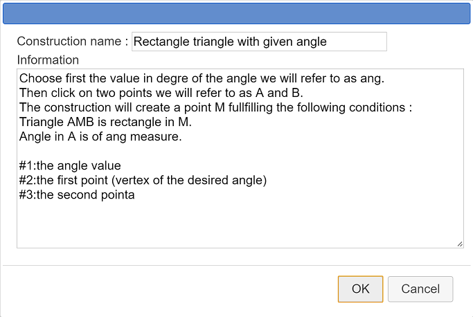

We will here explain how to create a construction and how to use it.
We wish to create a construction. It's purpose will be, given two points A and B and a numerical value ang, to create a triangle AMB right-angled in M with angle BAM of measure ang.
Create a new figure with icon  . Choose a figure without frame and with an unity length.
. Choose a figure without frame and with an unity length.
If necessary, use menu icon  to set degree as angle unity for the current figure.
to set degree as angle unity for the current figure.
Use icon  to create a calculation named ang with formula 30.
to create a calculation named ang with formula 30.
Create two free points with icon  et name them A and B.
et name them A and B.
Use icon  to create midpoint of segment [AB].
to create midpoint of segment [AB].
With icon  create a circle of center the midpoint and going through point A.
create a circle of center the midpoint and going through point A.
Let's now create the image of B through rotation center A and angle ang.
Click on tool  . Then click on A (rotation center). A starts blinking. Click on point B to get it's image created.
. Then click on A (rotation center). A starts blinking. Click on point B to get it's image created.
Use tool  to create the ray with origin A and going through the last point created (image point).
to create the ray with origin A and going through the last point created (image point).
Click on intersection tool  , then click at the intersection of the last ray and the circle. We will call the new point created C.
, then click at the intersection of the last ray and the circle. We will call the new point created C.
Use tool  to create segments [AB], [BC] and [CA] and tool
to create segments [AB], [BC] and [CA] and tool  to mark the right angle in C (click on A, C and B in this order).
to mark the right angle in C (click on A, C and B in this order).
Our figure is now ready to create our construction.
Use icon  then choose Graphical sources objects choice. Click on A and B, then click on the red STOP button on the right bottom side of the window.
then choose Graphical sources objects choice. Click on A and B, then click on the red STOP button on the right bottom side of the window.
Use icon  then choose Numerical sources objects choice.
then choose Numerical sources objects choice.
A dialog box pops up.
The left list contains all numerical objects which are potential object sources.
Click on ang then click on button Insert (you can also double click on ang) then validate.
Now we have to choose the final objects of our figure. In this example, all the final objects are numerical.
Let's point out that it is only possible to choose as final objects objects exclusively created through sources objects.
Use icon  then choose Graphical final objects choice.
then choose Graphical final objects choice.
Click on point C, on the three segments and on the angle mark then click on the red STOP button.
To finalize the construction, la construction, use icon  then choose Finish current construction.
then choose Finish current construction.
Fill in the dialog box as underneath :

Let us explain the information entered here.
The first five lines are general explanations for the future user. These explanations will pop up when pressing key F7 while implementing the construction.
The last three lines will be displayed in the indication line(at the bottom of MathGraph32 window) when the user will be asked to click on sources objects.
Each line starts with character # followed with the index of the source object.
To be noticed : When implementing a macro, numerical sources objects must always be specified first.
If you don't delete this construction, it will be saved with the figure when you save the figure to a file. But it is better to save the construction in a separate file with extension mgc.
For this use icon  and choose Save a construction of the figure.
and choose Save a construction of the figure.
Let us now implement this construction in another figure.
Use menu icon  and choose a figure with or without a frame.
and choose a figure with or without a frame.
Use icon  and choose Incorporate construction from file to incorporate the construction you just saved in a file.
and choose Incorporate construction from file to incorporate the construction you just saved in a file.
Use icon  (toolbar of calculations and cursors) to create a new variable named a, with mini value of - 90, maxi value of 90, step value of 10 , current value of 30 and select checkbox Associated dialog.
(toolbar of calculations and cursors) to create a new variable named a, with mini value of - 90, maxi value of 90, step value of 10 , current value of 30 and select checkbox Associated dialog.
Create two free points with tool and get them named C and D.
Use now icon  and choose Implement a construction of the figure.
and choose Implement a construction of the figure.
A dialog box pops up with a list of the constructions of the figure. Click on Tangents then click on button Implement.
Another dialog box pops up for the choice of numerical objects.
In the right list, click on variable a to associate a to the first source object (only source object in this example).
Then in the indication line we see that the construction is waiting for us to click on two points. Click on point C and D.
You see now new objects appear : the final objects of the construction.
Click on buttons + and - in the little dialog box associated with the variable to change the angle in C.
In more complicated constructions you can also have numerical final object sources.
Using  icon (figure protocol) and checking the checkbox Intermediary objects, you will be able to see all the objects created, including intermediary objects.
icon (figure protocol) and checking the checkbox Intermediary objects, you will be able to see all the objects created, including intermediary objects.
Intermediary objects cannot be used by other objects, except using icon  and choosing Merge constructions implemented in figure.
and choosing Merge constructions implemented in figure.
To be noticed :
In current use, free points are only sources objects.
But you may want a free point to become a final object of a construction.
To do so :
Click on the free point while choosing graphical sources objects.
Click on the same point when clicking on final graphical objects.
A confirmation will be asked and your point will become a final object.